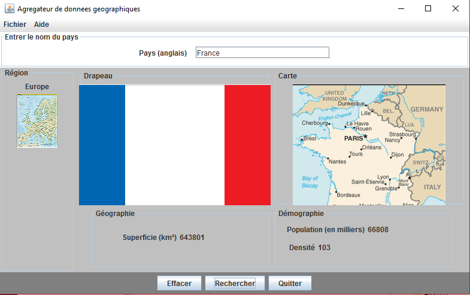

Etudiant et co-fondateur de TVA
Tout d'abord, durant le 1er semestre, le projet consistait à élaborer un petit jeu en 2D, à l'image de Pac-Man. En effet, Le but était de collecter des pièces d'or sur une carte, en faisant attention aux murs et aux pièges.
Ce programme fut écrit en langage C et était affiché uniquement sur le mode console.
Ensuite, le 2ème projet conçu lors du 3ème semestre, était plus dans l'idée de développer un logiciel utilitaire. Sa fonction est de rechercher dynamiquement des informations géographiques et démographiques à partir d'un jeu de données fournis.

Pour résumer, c'est un moteur de recherche local. Logiciel écrit en langage Java avec le logiciel Eclipse.